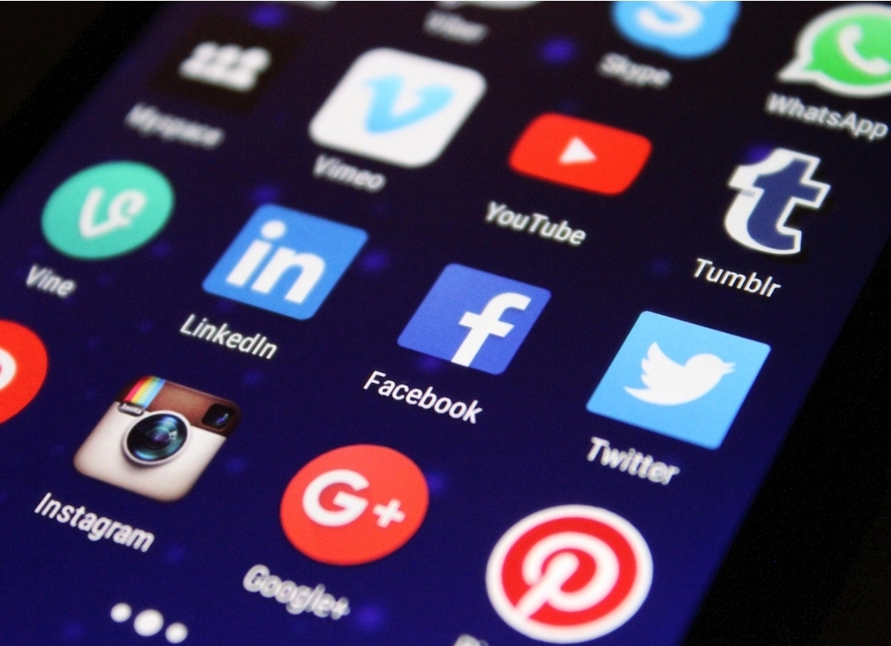

Angibel Jiménez
Las redes sociales forman parte fundamental de la vida diaria de millones de personas en todo el mundo. Estas plataformas permiten comunicarse, compartir información y expresar ideas de manera rápida. Sin embargo, su uso inadecuado puede generar problemas como la desinformación, el ciberacoso y la pérdida de privacidad. Por ello, es importante promover un uso responsable que contribuya al bienestar personal y social.
El uso responsable de las redes sociales implica utilizarlas de forma consciente, respetuosa y segura, considerando el impacto de nuestras acciones en los demás.
| Herramienta | Función |
|---|---|
| Control de privacidad | Protege la información personal |
| Bloqueo de usuarios | Evita interacciones negativas |
| Tiempo de uso | Controla el tiempo en pantalla |

Un ejemplo de uso responsable es verificar la información antes de compartirla para evitar la propagación de noticias falsas. También es importante respetar a los demás usuarios, evitando comentarios ofensivos o agresivos. Otro caso práctico es configurar la privacidad de las cuentas para proteger datos personales.

El uso responsable de las redes sociales es esencial en la actualidad. Permite aprovechar sus beneficios sin caer en riesgos que afecten la salud mental, la seguridad y la convivencia. Es responsabilidad de cada usuario actuar con respeto, pensamiento crítico y autocontrol.